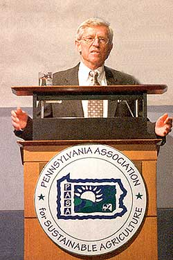
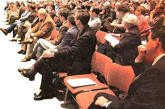

This report byMOTHER contributing editor George De Vault provides highlights from the recent Pennsylvania Association for Sustainable Agriculture conference. Dozens of similarly inspiring meetings are taking place across the continent as more and more people work to build a sustainable American food system. These meetings are great places to learn hog; to garden or faun, and to meet neighbors who share your interest in living wisely.
-MOTHER
The idea of holding a Farming for the Future Conference started out as a test. With the U.S. government's emphasis on cheap food and industrialized farming, organizers wondered, were there enough people interested in sustainable agriculture to form a statewide group devoted to better food and farming practices?
The answer came when 500 people showed up at the first conference in 1992. The meeting was being held on the campus of Pennsylvania State University, a land grant college. State officials had no choice but to put in at least a token appearance.
"The turnout came as a slight surprise to organizers, but I think it came as a thunderbolt to the Pennsylvania Department of Agriculture and others," recalled Cass Peterson, who helped organize the conference.
"For me, what was most memorable about the first conference alas the excitement of meeting scores-no, hundreds-of other like-minded farmers who had practical knowledge, experience and enthusiasm, and were eager to share it. Most sustainable or organic farmers operated then-and still do-as a distinct minority in their counties.
"We had been derided by our state agriculture department, ignored by our extension agents and insulted by our state's primary agriculture magazine. Finding all that acceptance and support was exhilarating. I think it's still one of the primary reasons people attend the annual conference."
The Pennsylvania Association for Sustainable Agriculture (PASA), as it is now known, regularly draws more than 1,000 people to its annual conference. No longer are state officials simply being polite by offering welcoming remarks.
The state agriculture department, department of environmental protection, Penn State College of Agriculture and other Universities helped sponsor the 11th annual conference in February. Each contributed thousands of dollars toward the event. The front row of the opening general session was packed with dignitaries from throughout state government and the university.
"Whether or not you realize it, we're all part of a movement: a social, political movement that is taking place all across the country. That makes some people uncomfortable. I know particularly at some of the universities, the departments of agriculture have always encouraged people to not refer to this as a movement," said keynote speaker John Ikerd, a retired agricultural economist from the University of Missouri.
"Well folks, regardless of whether our public institutions are comfortable with the concept or not, when social movements arise from the grassroots, then public institutions have no choice but to pay attention because that's the public speaking about moving in a different direction than we've been going.
"This is one of the great conferences of sustainable agriculture around the country," said Ikerd. "There are over a thousand people here. There is a conference out in California that draws 1,400 to 1,500 a year. The Upper Midwest Organic Conference: 1,200 to 1,400 people a year. At the Northern Plains Sustainable Conference last week they had about 400 people, some of whom drove eight hours to get there. The Southern SAWN (Sustainable Agriculture Working Group) Conference attracts 400 to 500 people a year. There are so many conferences around the country that draw from 100 to 300 people, I couldn't even begin to count them. We're a part of something important. There is a change taking place across America."
Ikerd knows a lot about change. He grew up on a small dairy farm in Missouri. Starting in the 1960s, he worked as an agricultural economist at universities in Georgia, Oklahoma and North Carolina. During the Farm Crisis of the 1980s, he watched as the cheap-food policy nearly destroyed his brother's dairy in Missouri. "He was working too hard and going broke. I started to question what I saw- happening and came to see the profit-maximization approach being used by agriculture professionals was at the root of the problem.
"People have lost all sense of where their food comes from. We could easily get into a situation where we're as dependent on the rest of the world for food as we are now for oil," he said. (For more by Ikerd on food security, see Page 26.)
The message wasn't lost on Pennsylvania Department of Environmental Protection Secretary David Hess, who e-mailed the following note to all department employees hours after addressing the conference:
"If you ever get the chance to go to the Pennsylvania Association for Sustainable Agriculture Conference, take it. What a great bunch of people! They care about the environment, their watersheds and healthy food.
"I talked to them about the drought and Governor (Mark) Schweiker's Water Resources Initiative, and they got it! They even applauded when I said we can't take water for granted any more! (It had to be the audience, because I used the same line other places and didn't get the same reaction.)"
PASA has 1.123 members. Only half are farmers, which is why the conference's more than 40 workshops reach out to a broader audience with sessions like "Food Is Elementary: Why We Need Food Literacy, in Our Schools," "How to Change Your Diet for the Better," and "Converting Your Lawn to Natural Habitat."
Kathy Lawrence, executive director of the National Campaign for Sustainable Agriculture, urged conference-Boers to become more active in reforming the present Farm Bill. Her workshop was titled "Agriculture and Democracy: Food and Farm Policy of, by and for the People or ADM (corporate ag/food giant Archer Daniels Midland)? The Choice Is Ours." While commodity programs may be disastrous, she said sustainable agriculture supporters are making good progress in areas of conservation, limiting federal subsidies.
"Democracy is not what we have, but what we do. Join the fight for policies that really work for farmers, workers, consumers and the environment!" she said.
And that, observed PASA Executive Director Brian Snyder, is why it was notable so many government officials attended. "Not so much so you could hear them, but so they
could see allof you."
Post your sustainable agriculture, renewable energy or other wise-living conferences,fairs or festivals on the Mother Earth News ONLINE calendar. For instructions, send an e-mail to letters@motheraerthnews.com
|
 COURTESY PASA/PAT LITTLE(2) Conference keynote speaker John Ikerd |
 |
|